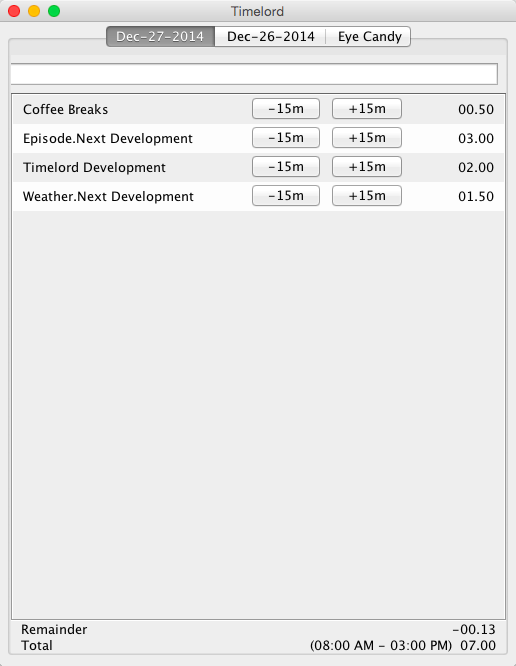
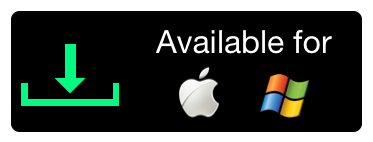

A simple client application to capture time tracking information on your local system.
The basic idea is that everyone hates time tracking. The moment you start working in a job that has a lot of randomization and a lot of time tracking, nearly all the major tools out there are too burdensome to use. If you are not tracking your time every 15-30 minutes, then you've already forgot what you were doing.
Timelord is a simple application for people who sit in front of their computer most of the time. It continually pesters you to tell it what you have been doing so that you don't let the time get away from. Every 15m it will popup and ask what you are doing. Once you save it, it will go away for 15m. That's it.
No fancy formatting, no task hierarchy, not taxonomies. Just name your tasks.
No integrations. At the end of the week, export your data in Excel and upload it or copy-paste it into your corporate time tracking solution.
It's a Java Swing application.
The project is available on Github so why not contribute?